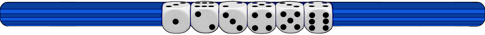

Exercise sheet 1: Hidden Markov models
Exercise 1 - Two kinds of dice

A casino uses two kinds of dice: 98% of dice are fair and 2% are loaded. The loaded die has a probability of 0.5 to show number six and 0.1 for the number one to five.
Question A
When we pick up a die from a table at random, what is the probability of rolling a six?
Hint 1 : Formulae
\[ L= \text{Loaded} \quad F= \text{Fair}\quad O= \text{Observation}\\ P(O) = P(F) \times P(O|F) + P(L) \times P(O|L) \]
Hint 2 : Calculation Method
\[ P(6) = 0.98 \times \frac{1}{6} + 0.02 \times \frac{1}{2} \]
Solution
\[ P(6) = 0.173\bar{3} \]
Question B
We pick up a die from a table at random and roll [⚅ ⚅ ⚅]. What is the probability, that the die is loaded.
Hint 1 : Formulae
\[ P(L|O) = \frac{P(L,O)}{P(O)}\\ P(L,O) = P(O|L) \times P(L) \]
Hint 2 : Calculation Method
\[\begin{align*} P(L|O) &= \frac{P(O|L)\times P(L)}{P(O|L)\times P(L) + P(O|F)\times P(F)}\\ &= \frac{(\frac{1}{2})^3 \times 0.02}{(\frac{1}{2})^3 \times 0.02 + (\frac{1}{6})^3 \times 0.98} \end{align*}\]
Solution
\[ P(L|O) = 35.53\% \]
Question C
How many sixes in a row would we need to roll to be at least 90% sure that the die is loaded?
Hint 1 : Formulae
\[ P(L|O) = \frac{P(O|L)\times P(L)}{P(O|L)\times P(L) + P(O|F)\times P(F)}\\ \]
Hint 2 : Calculation Method
\[\begin{alignat}{3} &P(L|O) = \frac{\frac{2}{100}\times(\frac{1}{2})^n}{\frac{2}{100}\times(\frac{1}{2})^n + \frac{98}{100}\times(\frac{1}{6})^n} &&\geq 0.9 &&\quad| \text{ split } (\frac{1}{6})^n\\ &\iff \frac{\frac{2}{100}\times(\frac{1}{2})^n}{\frac{2}{100}\times(\frac{1}{2})^n + \frac{98}{100}\times(\frac{1}{2})^n \times (\frac{1}{3})^n} &&\geq \frac{9}{10} &&\quad| \text{ factorize}\\ &\iff \frac{\frac{2}{100}\times(\frac{1}{2})^n}{\frac{2}{100}\times(\frac{1}{2})^n \times (1 + 49 \times (\frac{1}{3})^n)} &&\geq \frac{9}{10} &&\quad| \text{ simplify, given } n > 0\\ &\iff \frac{1}{1 + 49 \times (\frac{1}{3})^n} &&\geq \frac{9}{10} &&\quad| \text{ cross-multiply, given } n > 0\\ &\iff \frac{9}{10} (1 + 49 \times (\frac{1}{3})^n) &&\leq 1 &&\quad| \text{ rewrite }\\ &\iff (\frac{1}{3})^n &&\leq \frac{1}{441} &&\quad| \text{ ln() }\\ &\iff n \times ln(\frac{1}{3}) &&\leq ln(\frac{1}{441}) &&\quad| \times\frac{1}{ln(\frac{1}{3})} \\ &\iff n &&\geq \frac{ln(\frac{1}{441})}{ln(\frac{1}{3})}\\ &\iff n &&\geq 5.542487... \end{alignat}\]
Solution
\[ n = 6 \text{ as only Integers make sense here (just trying would also work)} \]
Exercise 2 - The occasionally cheating casino

In a casino they use a fair die most of the time, but occasionally they switch to a loaded die. The loaded die has a probability 0.5 to show number six and probability 0.1 for the numbers one to five. Assume that the casino switches from a fair to a loaded die with probability 0.05 before each roll, and that the probability of switching back is 0.1. The probability to start a game with the fair die is 0.9.
Question C
Draw a graphical representation of the described Hidden Markov model.
Solution
a
Download: PDF Version of this page.